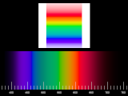

{kind=link}

 Spectrum is a library module from the Persistence of Vision Ray Tracer (POV-Ray) Object Collection for creating spectrum color maps and pigments.
The italicized nnnnnn in some of the file names represents the 6-digit number that is in the name of the .zip file.
| Key Files | |
|---|---|
| File | Description |
spectrum.html |
The user manual (this document) |
spectrum.inc |
The Spectrum software |
spectrum.png |
Sample output |
spectrum.pov |
A demonstration scene file |
READMEnnnnnn.html |
Important information about using the POV-Ray Object Collection |
| Other Files | |
| File | Description |
spectrum.css |
A file used by the user manual |
spectrum_description.txt |
A brief description of Spectrum |
spectrum_keywords.txt |
A list of keywords |
spectrum_prereqs.txt |
Prerequisites |
spectrum_thumbnail.png |
An illustration for the user manual |
cc-LGPL-a.png |
Administrative files |
Versionnnnnnn.js |
|
All file names in this module and all global and local identifiers defined in spectrum.inc comply fully with the Object Collection naming standards, as revised August 2008 and proposed August 2012. The prefix for this module is “Spectrum,” including any uppercase and lowercase variants; to avoid conflicts, do not declare identifiers that start with this prefix plus an underscore.
Spectrum reads one of the Lightsys files and references some of its identifiers. As Lightsys is not part of the Object Collection, there is no guarantee that its identifiers will not conflict with those of compliant Object Collection modules. If necessary, all of the identifiers from that file can be destroyed by macro CIE_ReleaseMemory() after all Lightsys-based spectra are defined.
Include this file once prior to using any of the features:
#include "spectrum.inc"
Including the file more than once is harmless, though unnecessary.
For best results with the Lightsys-based spectra, set the assumed gamma to 1:
global_settings { assumed_gamma 1 }
Several of these macros rely on the color system and gamut mapping settings in Lightsys IV. See readme_cie.txt in the LightsysIV folder for more information. The default color system is appropriate for most users.
What is gamut mapping? Some colors, including pure spectral colors, cannot be represented with three primary colors. Gamut mapping is the art of choosing the best approximation for these colors. Lightsys IV’s default gamut mapping method, though it may be fine for some purposes, is not ideal for depicting spectra.
Returns a gamut-mapped color map using Lightsys IV, using the current Lightsys color system and gamut mapping method. The color map is normalized as a whole so that the maximum channel value is 1.0.
Returns gamut-mapped color data from Lightsys IV, using the current Lightsys color system and gamut mapping method. The data are not normalized.
Returns a gamut-mapped pigment using Lightsys IV, using the current Lightsys color system and gamut mapping method. The pigment is normalized as a whole so that the maximum channel value is 1.0.
Returns a color map derived from user-supplied spectrum data. The result is not normalized or gamut-mapped.
Data: Returns a pigment derived from user-supplied spectrum data. The result is not normalized or gamut-mapped.
Data: Normalizes spectrum data as a whole such that the highest channel value in the array is scaled to 1.0, then scales the data according the the given argument. The array is altered in-place, and not returned.
Data: Scale:
Returns a ruler-like pigment. The ruler is oriented in the x direction; the ticks are 1 unit apart and centered on integer positions; and the pigment is completely transparent between tick marks.
Fine: c_Ink: Returns a pigment using Lightsys IV, using the current Lightsys color system. The pigment is gamut-mapped using a combination of methods, and normalized as a whole so that the maximum channel value is 1.0.
Warning! Spectrum_Special_p() changes the Lightsys gamut mapping method, then restores it after the pigment is defined. In order to restore the gamut mapping method, it references an undocumented variable in the Lightsys IV file CIE.inc. If this ever becomes a problem, the two lines of code in Spectrum_Special_p() that are marked with “//@@[1]” may be deleted, but then the user must remember to manually restore the gamut mapping method with CIE_GamutMapping(). As of January 2014, the Lightsys IV default is CIE_GamutMapping (1).
| Identifier | Type | Description | Value |
|---|---|---|---|
SPECTRUM_BLUE |
float | The wavelength, in nanometers, of the sRGB blue primary | 464.3 |
SPECTRUM_CYAN |
float | The wavelength, in nanometers, of the sRGB cyan with equal amounts of green and blue | 491.5 |
SPECTRUM_GREEN |
float | The wavelength, in nanometers, of the sRGB green primary | 549.1 |
SPECTRUM_RED |
float | The wavelength, in nanometers, of the sRGB red primary | 611.3 |
SPECTRUM_VERSION |
float | The Spectrum version, in case the scene file needs that information | 4.0 |
SPECTRUM_YELLOW |
float | The wavelength, in nanometers, of the sRGB yellow with equal amounts of red and green | 570.5 |
Any identifiers in spectrum.inc that are not documented in this manual are considered “private” or “protected,” and are subject to change or elimination in a future update.
Due to Fair Use of copyrighted material, I cannot make these versions public. This section is little more than a paper trail.
| Version | Date | Notes |
|---|---|---|
| unversioned | December 22, 2008 |
|
| unversioned | August 18, 2009 |
|
| 2.0 | October 7, 2012 |
|
| 2.1 | October 7, 2012 |
|
| 3.0 | January 4, 2014 |
|
| Version | Date | Notes |
|---|---|---|
| 4.0 | January 10, 2014 |
|